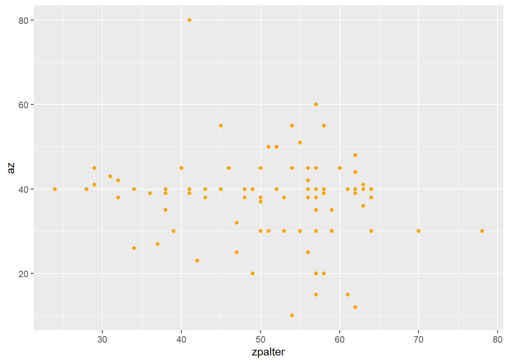
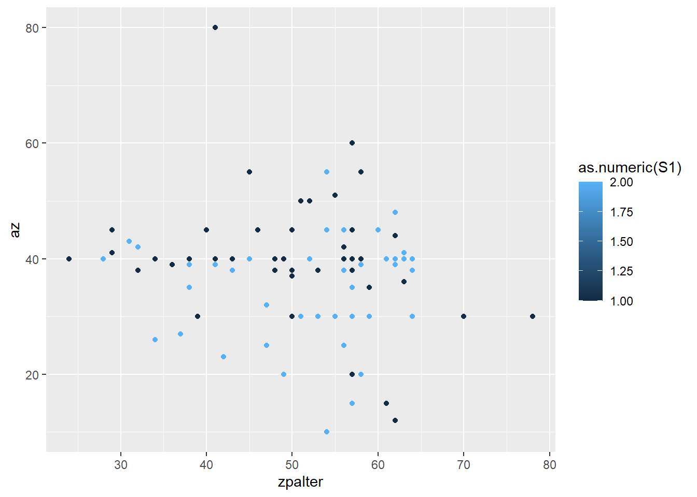
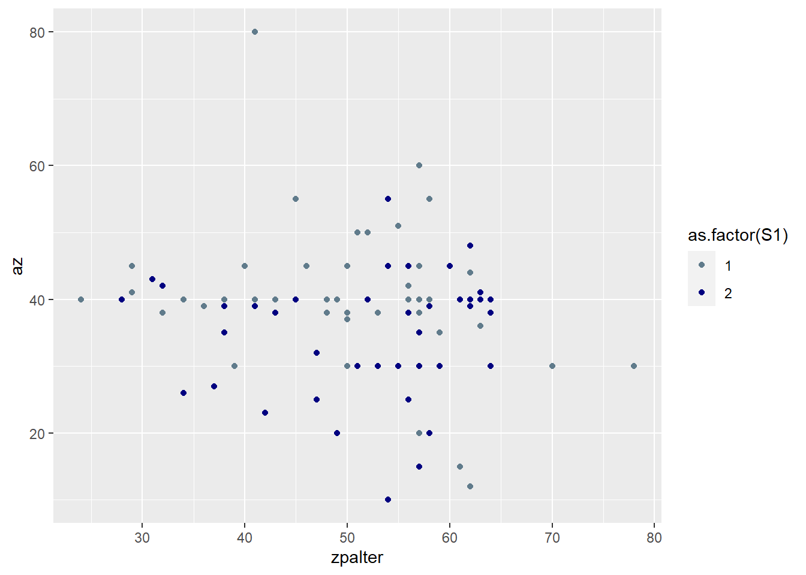
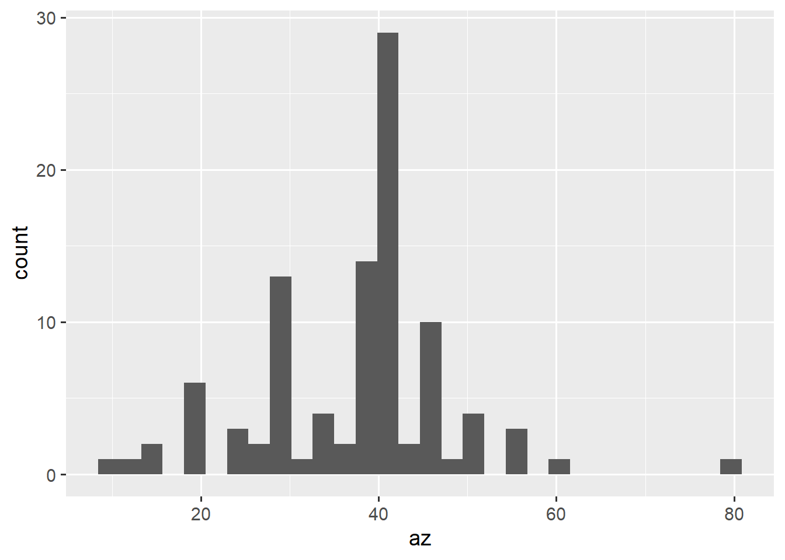
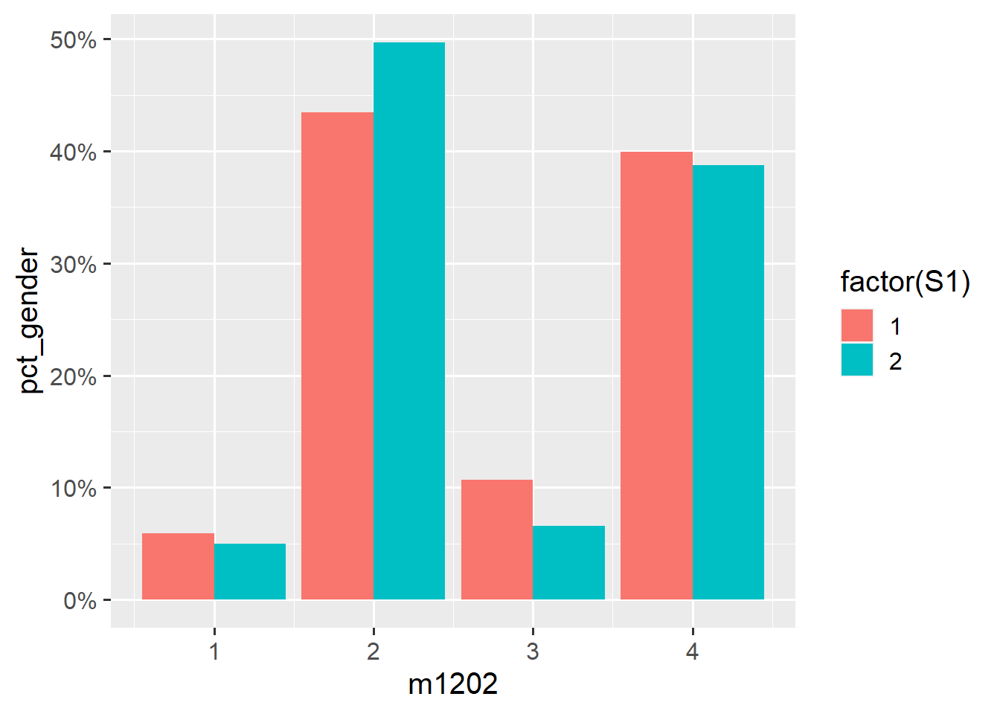
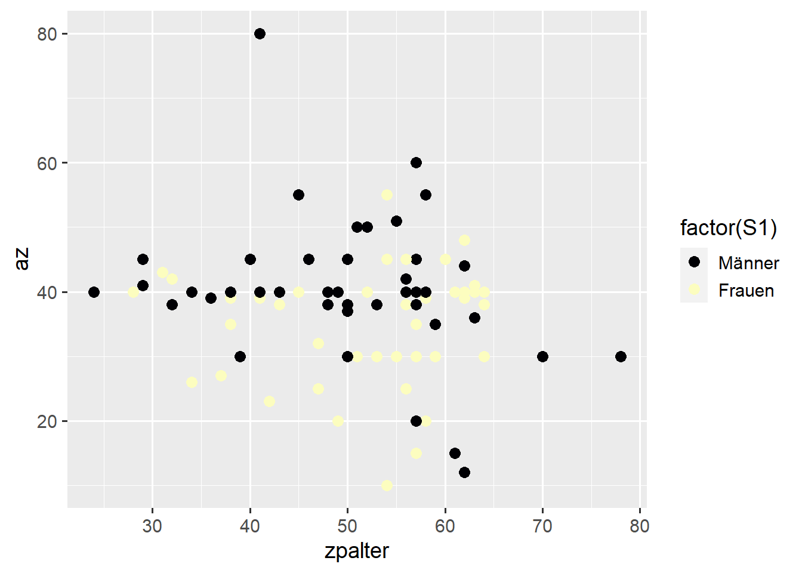
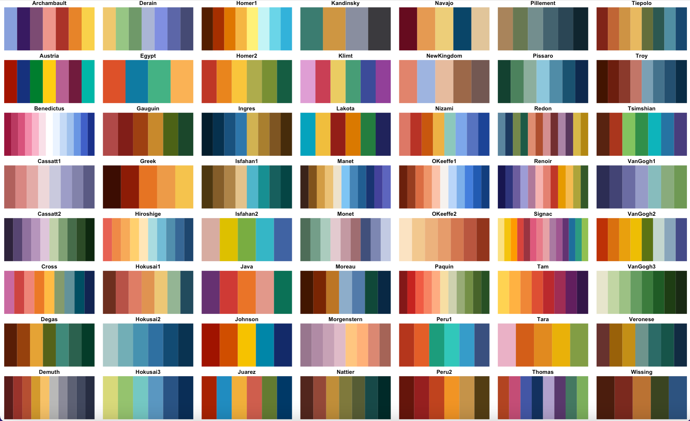

library(haven) # für datenimport
library(tidyverse)
# library(ggplot2) # nicht nötig wenn tidyverse geladen4 Visualisierung mit {ggplot2}
Neben Kennzahlen/Tabellen können/sollten Verteilungen auch visualisiert werden. Dafür bietet {ggplot2} eine riesige Auswahl an Möglichkeiten.
{ggplot2} ist Teil des {tidyverse}, d.h. wir können entweder nur {ggplot2} oder die gesamte {tidyverse}-Sammlung laden:
Zunächst sehen wir uns den Weg zu einem Scatterplot an:
Datengrundlage für unsere Graphik ist die ETB18 mit den Angaben zur Arbeitszeit sowie dem Geschlecht und Alter der Befragten:
etb18 <- read_dta("./data/BIBBBAuA_2018_suf1.0.dta")etb18 %>% select(az,S1,zpalter) %>% head()# A tibble: 6 × 3
az S1 zpalter
<dbl> <dbl+lbl> <dbl+lbl>
1 80 1 [männlich] 41
2 30 2 [weiblich] 51
3 40 1 [männlich] 49
4 40 2 [weiblich] 63
5 39 2 [weiblich] 41
6 40 1 [männlich] 57 Um die Grafik nicht zu groß zu machen, verwenden wir nur die ersten 100 Beobachtungen:
etb18$zpalter[etb18$zpalter>100] <- NA # missing in zpalter mit NA überschreiben
etb18_small <- etb18 %>% slice(1:100)4.1 ggplot2 und die grammar of graphics
Nach der Installation und der Aktivierung von {ggplot2} können wir uns der Logik dieses Pakets widmen. ggplot2 ist die Umsetzung des Konzepts der “layered grammar of graphics” in R. Die Idee dieses Visualisierungssystems ist es, Datenvisualisierung in Parameter zu unterteilen: der zugrundeliegende Datensatz, die darzustellenden Variablen, die Wahl der darzustellenden Formen, das Koordinatensystem, Skalen und statistische Transformationen. Ein Standardbefehl in ggplot2 sieht ungefähr so aus:
ggplot(data = datensatz, aes(x = var1, y = var2, color = var3)) +
geom_point() +
labs(title= "Titel", subtitle = "Untertitel") +
theme_minimal()Wir rufen also zunächst mit ggplot() eine Darstellung auf. In den weiteren Argumenten werden dann weitere Aspekte festgelegt:
- Mit
data =geben wir dendata.framean, den wir darstellen möchten - Die Aesthetics
aes()legen fest, welche Variablen dargestellt werden sollen: hier alsovar1auf der x-Achse,var2auf der y-Achse undvar3soll die Farbgebung festlegen - Die Layers
geom_..geben die Art der Darstellung an, zB.geom_point()für Punkt- undgeom_bar()für Säulendiagramme. - Mit
labskönnen wir Beschriftungen angeben, zB. einen Titel vergeben oder die Achsenbeschriftungen anpassen - Die Themes
theme_...legen das Design der Graphik fest, zB. schwarz/weiße Achsen- und Hintergrundfarben mittheme_bw()
Wir arbeiten uns also jetzt durch die einzelnen layer/Schichten der Grafik:
4.1.1 data =
In data = geben die den data.frame an, aus dem die darzustellenden Informationen kommen. Wir starten unseren ggplot also mit:
ggplot(data = etb18_small)
4.1.2 aes
Diese Werte wollen wir also in einem Scatterplot darstellen, sodass das Alter auf der x-Achse und auf der y-Achse die Wochenarbeitszeit abgetragen ist:
ggplot(data = etb18_small, aes(x = zpalter, y = az))
4.1.3 geom
Wenn wir nur diese Angaben machen, bekommen wir lediglich ein leeres Koordinatensystem - warum? Weil wir noch nicht angegeben haben, welche Form der Darstellung wir gerne möchten. Dazu muss wir ein geom_ angeben, für Säulendiagramme ist das geom_col(), diese hängen wir an den ggplot-Befehl mit + an:
ggplot(data = etb18_small, aes(x = zpalter, y = az)) + geom_point()Mit color = können wir den Punkten auch eine andere Farbe geben:
ggplot(data = etb18_small, aes(x = zpalter, y = az)) + geom_point(color = "orange")
4.1.4 aes() Teil II
Das sieht soweit schon ganz gut aus, allerdings werden die Punkte noch nicht getrennt nach Geschlecht dargestellt. Dazu müssen wir die Geschlechtsangabe (S1) in aes() angeben. Neben den Achsen werden in aes() nämlich auch die Variablen für das Aussehen der geom_s angeben - das kann neben der Farbe auch die Form, Größe oder Transparenz sein. Hier ein Überblick
Das Geschlecht soll die Färbung der Punkte vorgeben, diese können wir in aes mit color angeben:
ggplot(data = etb18_small, aes(x = zpalter, y = az, color = S1 )) +
geom_point()Error in UseMethod("rescale"): nicht anwendbare Methode für 'rescale' auf Objekt der Klasse "c('haven_labelled', 'vctrs_vctr', 'double')" angewendetggplot(data = etb18_small, aes(x = zpalter, y = az, color = as.numeric(S1))) +
geom_point()
ggplot(data = etb18_small, aes(x = zpalter, y = az, color = factor(S1))) +
geom_point()
Außerdem können wir mit scale_color_manual1 selbst Farben angeben, eine Liste möglicher Farben findet sich hier.
ggplot(data = etb18_small, aes(x = zpalter, y = az, color = factor(S1))) +
geom_point() +
scale_color_manual(values = c("lightskyblue4","navy"))
4.1.5 Beschriftungen
Wir können mit den Optionen breaks und labels zudem auch die Beschriftung der Legende bearbeiten. Dazu geben wir zunächst in breaks die Ausprägungen der Variable Geschlecht an und dann in der gleichen Reihenfolge die zu vergebenden Labels:
ggplot(data = etb18_small, aes(x = zpalter, y = az, color = factor(S1))) +
geom_point() +
scale_color_manual(values = c("lightskyblue4","navy"),
breaks = c(1,2), labels = c("Männer", "Frauen") )
Abschließend passen wir dann noch mit labs die Beschriftungen an, dabei haben wir folgende Optionen:
title: Überschrift für die Graphiksubtitle: Unterzeile zur Überschriftcaption: Anmerkung unterhalb der Graphikx: x-Achsenbeschriftungy: y-Achsenbeschriftungfill: Beschriftung für die Legende, wennfillinaes()angegeben wurdecolor: Beschriftung für die Legende, wenncolorinaes()angegeben wurde
ggplot(data = etb18_small, aes(x = zpalter, y = az, color = factor(S1))) +
geom_point() +
scale_color_manual(values = c("lightskyblue4","navy"),
breaks = c(1,2), labels = c("Männer", "Frauen") ) +
labs(color = "Geschlecht", y = "Arbeitszeit/Woche",
x = "Alter",
title = "Arbeitszeit und Alter",
subtitle = "Nach Geschlecht",
caption = "Quelle: ETB 2018"
) Außerdem können wir mit theme_ ein anderes Design auswählen, zB. mit theme_minimal() einen weißen Hintergrund mit grauen Markierungslinien (weitere Beispiele in den Hinweisen unter Themes)
4.2 Plots als Objekte
Außerdem kann ein ggplot auch ein Objekt sein:
p1 <- ggplot(data = etb18_small, aes(x = zpalter, y = az, color = factor(S1))) +
geom_point(size = 2)
p1 + scale_color_manual(values = c("lightskyblue3","navy"),
breaks = c(1,2), labels = c("Männer", "Frauen") )
p1 + scale_color_manual(values = c("coral","orange"),
breaks = c(1,2), labels = c("Männer", "Frauen") ) 
4.3 Kombination aus allem
etb18_small$m1202[etb18_small$m1202<0] <- NA
ggplot(data = etb18_small, aes(x = zpalter, y = az,
color = factor(S1),
shape = factor(m1202))) +
geom_point(size = 2) +
scale_color_manual(values = c("lightskyblue3","navy"),
breaks = c(1,2), labels = c("Männer", "Frauen") ) +
scale_shape_manual(values = c(15:18),breaks = c(1:4),
labels = c("ohne Aus", "duale Ausb.","Aufstiegsfortb.","FH/Uni")) +
labs(color = "Geschlecht",
shape = "Ausbildung",
fill = "Geschlecht",
y = "Arbeitszeit/Woche",
x = "Alter",
title = "Arbeitszeit und Alter",
subtitle = "Nach Geschlecht",
caption = "Quelle: ETB 2018"
) 4.4 ggsave()
Um eine Grafik dann zu speichern, steht uns ggsave() zur Verfügung. Wenn wir nichts anderes angeben, wird automatisch die gerade offene Grafik2 gespeichert. Besser ist es aber explizit zu sein:
plot_objekt1 <- ggplot(data = etb18_small, aes(x = zpalter, y = az,
color = factor(S1),
shape = factor(m1202))) +
geom_point(size = 2) +
scale_color_manual(values = c("lightskyblue3","navy"),
breaks = c(1,2), labels = c("Männer", "Frauen") ) +
scale_shape_manual(values = c(15:18),breaks = c(1:4),
labels = c("ohne Aus", "duale Ausb.","Aufstiegsfortb.","FH/Uni")) +
labs(color = "Geschlecht",shape = "Ausbildung", fill = "Geschlecht",
y = "Arbeitszeit/Woche",x = "Alter",
title = "Arbeitszeit und Alter", subtitle = "Nach Geschlecht",caption = "Quelle: ETB 2018") ggsave(plot = plot_objekt1,filename = "./grafik/plot1.png",
dpi = 800, # auflösung
# width = 9, height = 7, # falls angepasst werden soll
)Die richtige Kombination aus Auflösung, Textgröße und Gesamtgröße des Plots zu finden hat einige Fallstricke. Hier mehr dazu.
4.4.1 Übung
4.5 Labels übernehmen
Wenn(!) die labels und Variablenformate passen, dann hilft uns easy_labs() aus {ggeasy} weiter:
install.packages("ggeasy")library(ggeasy)
etb18_small$S1 <- factor(etb18_small$S1)
ggplot(data = etb18_small, aes(x = zpalter,
y = az)) +
geom_point(size = 2) +
easy_labs()4.6 Verteilungen visualisieren
4.6.1 Boxplot
Definition der Bestandteile eines Boxplots:
Mit der folgenden Syntax können wir mit ggplot2 einen Boxplot erstellen. Da wir nur eine Variable betrachten, müssen wir lediglich y = oder x = angeben - je nachdem ob die Box vertikal oder horizontal orientiert sein soll.
ggplot(data = etb18_small, aes(y = az)) + geom_boxplot()So können wir einen Boxplot erstellen, der die Werte für Männer und Frauen getrennt darstellt:
ggplot(data = etb18_small, aes(y = az, x = factor(S1))) + geom_boxplot()
4.6.2 Histogram
Ebenso können Verteilungen mit einem Histogramm beschrieben werden:
ggplot(data = etb18_small, aes(x = az)) +
geom_histogram() 
Wenn wir hier die Farbe ändern möchten, dann ist fill = anstelle von color = die richtige Option:
ggplot(data = etb18_small, aes(x = az)) +
geom_histogram(fill = "sienna1") 
Möchten wir das Histogramm nach Geschlecht aufsplitten, können wir auch hier wieder fill als Aesthetic angeben. Mit position = position_dodge() können wir die Balken nebeneinander stellen lassen:
ggplot(data = etb18_small, aes(x = az, fill = factor(S1))) +
geom_histogram()
ggplot(data = etb18_small, aes(x = az, fill = factor(S1))) +
geom_histogram(position = position_dodge()) Auch hier funktionieren natürlich wieder die scale_...manual Befehle, allerdings hier als scale_fill_manual anstelle scale_color_manual von oben:
ggplot(data = etb18_small, aes(x = az, fill = factor(S1))) +
geom_histogram(position = position_dodge()) +
scale_fill_manual(values = c("sienna1","dodgerblue4"),
breaks = 1:2, labels = c("Männer","Frauen")) +
labs(fill = "Geschlecht")
ggplot(data = etb18, aes(x = az)) +
geom_histogram(aes(fill = factor(S1)), color = "grey50",position = position_dodge()) +
scale_fill_viridis_d(option = "E",labels = c("Männer","Frauen"))
Wir können das ganze auch als Density-Plot darstellen geom_density(), hier empfiehlt es sich aber mit alpha = die Deckkraft herunterzusetzen:
ggplot(data = etb18, aes(x = az,fill = factor(S1))) +
geom_density(alpha = .5) +
scale_fill_manual(values = c("sienna1","dodgerblue4"),
breaks = 1:2, labels = c("Männer","Frauen")) +
labs(fill = "Geschlecht") 
4.6.3 Übung
4.7 Kategoriale Merkmale
Im Folgenden sehen wir uns eine Möglichkeit an, die Kontingenztabelle aus Kapitel 2 zu visualisieren:
etb18$m1202[etb18$m1202<0] <- NA # missings ausschließen
etb18 %>%
count(S1,m1202) %>%
filter(!is.na(m1202))# A tibble: 8 × 3
S1 m1202 n
<dbl+lbl> <dbl+lbl> <int>
1 1 [männlich] 1 [Ohne Berufsabschluss] 594
2 1 [männlich] 2 [duale o. schulische Berufsausbildung/einf.,mittl. Beamt… 4371
3 1 [männlich] 3 [Aufstiegsfortbildung (Meister, Techniker, kfm. AFB u.ä.… 1073
4 1 [männlich] 4 [Fachhochschule, Universität/ geh., höhere Beamte] 4015
5 2 [weiblich] 1 [Ohne Berufsabschluss] 497
6 2 [weiblich] 2 [duale o. schulische Berufsausbildung/einf.,mittl. Beamt… 4926
7 2 [weiblich] 3 [Aufstiegsfortbildung (Meister, Techniker, kfm. AFB u.ä.… 652
8 2 [weiblich] 4 [Fachhochschule, Universität/ geh., höhere Beamte] 3839Da wir mit count() einen data.frame erhalten, können wir diesen direkt in ggplot() schicken und mit geom_col() Säulen darstellen:
etb18 %>%
count(S1,m1202) %>%
filter(!is.na(m1202)) %>%
ggplot(data = ., aes(x = m1202, y = n, fill = factor(S1))) +
geom_col(position=position_dodge()) Wie kommen wir jetzt an die relativen Häufigkeiten? Wir erweitern einfach die Pipeline vor ggplot() um den prop.table()-Befehl aus Kapitel 2. Mit scale_y_continuous(labels = scales::label_percent(accuracy = 1)) können wir außerdem die y-Achse in Prozentwerten angezeigen lassen:
etb18 %>%
filter(!is.na(m1202)) %>%
count(S1,m1202) %>%
group_by(S1) %>%
mutate(pct_gender = prop.table(n)) %>%
ggplot(data = ., aes(x = m1202, y = pct_gender, fill = factor(S1))) +
geom_col(position=position_dodge())
etb18 %>%
filter(!is.na(m1202)) %>%
count(S1,m1202) %>%
group_by(S1) %>%
mutate(pct_gender = prop.table(n)) %>%
ggplot(data = ., aes(x = m1202, y = pct_gender, fill = factor(S1))) +
geom_col(position=position_dodge()) +
scale_y_continuous(labels = scales::label_percent(accuracy = 1)) 

Auch diese Grafiken können wir dann wieder mit scale_... anpassen und mit labs() ausführlich labeln - alle Optionen sind konsistent über alle Darstellungsformen hinweg:
etb18 %>%
filter(!is.na(m1202)) %>%
count(S1,m1202) %>%
group_by(S1) %>%
mutate(pct_gender = prop.table(n)) %>%
ggplot(data = ., aes(x = m1202, y = pct_gender, fill = factor(S1))) +
geom_col(position=position_dodge()) +
scale_y_continuous(labels = scales::label_percent(accuracy = 1)) +
scale_fill_manual(values = c("navajowhite","navy"),
breaks = c(1,2), labels = c("Männer", "Frauen")) +
scale_x_continuous(breaks = 1:4 , labels = c("ohne Ausb.", "duale Ausb.","Aufstiegsfortb.","FH/Uni")) +
scale_y_continuous(labels = scales::label_percent(accuracy = 1)) +
labs(title = "Ausbildungsabschlüsse nach Geschlecht",
subtitle = "Relative Häufigkeiten",
caption = "Quelle: ETB 2018",
x = "Ausbildung",
y = "Relative Häufigkeit",
fill = "Geschlecht" ) 4.7.1 Übung
4.8 Übungen
Nutzen Sie für alle Aufgaben die ersten 150 Beobachtungen (etb18_small), um den Plot einfach zu halten. Denken Sie daran die fehlenden Werte mit filter() auszuschließen, Sie können dazu diesen Befehl verwenden:
etb18 <-
haven::read_dta("./data/BIBBBAuA_2018_suf1.0.dta",
col_select = c("h1216d", "S2_j", "S1", "m1202", "F518_SUF", "nt", "gkpol")
)
etb18_small <-
etb18 %>% filter(S2_j < 9999, h1216d > 0, F518_SUF < 99998) %>% slice(1:150)4.8.1 Übung 1
- Erstellen Sie einen Scatterplot für die Variablen Geburtsjahr (
S2_j, x-Achse) und Dauer der Ausbildung (h1216d, y-Achse). - Legen Sie die Farbe so fest, dass Männer und Frauen unterschiedliche Farben gekennzeichnet werden (
S1) - Verändern Sie die Farben auf
goldenrod1unddodgerblue4fest (oder eine beliebige andere) - Beschriften Sie die Achsen und Legende!
4.8.2 Übung 2
- Erstellen Sie einen Boxplot für die Verteilung des Einkommens (
F518_SUF). - Passen Sie diesen Boxplot so an, dass die Einkommensverteilungen für Männer und Frauen getrennt dargestellt werden. (Profi-Knobelfrage: wie können Sie die Boxen nach
S1einfärben?) - Erstellen Sie ein Histogramm, ebenfalls für die Einkommensverteilung und mit getrennten Farben für Männer und Frauen.
- Was passiert wenn Sie für das Histogramm statt
color =anstelle vonfill =verwenden? - Verändern Sie die Farben der Balken mit Hilfe von
scale_fill_manualoderscale_fill_breweroderscale_fill_viridis(Siehe Abschnitte Farben und ColorBreweR und viridis unter “weitere Optionen”) - Ändern Sie die Darstellung in einen density-Plot
4.8.3 Übung 3
- Erstellen Sie ein Säulen-Diagramm für die Größenklasse des Wohnorts der Befragten (
gkpol) - Erstellen Sie ein Säulen-Diagramm für die Größenklasse des Wohnorts der Befragten (
gkpol) getrennt nach der Variablent- färben Sie die Säulen nachnt. Die Variablenterfasst, ob die Befragten einer Nebentätigkeit nachgehen (1 = ja/ 0 = nein).
Kleine Hilfe: das sind die Labels für gkpol 1-7:
c("<2k", "2k bis <5k", "5k bis <20k", "20k bis <50k", "50k bis <100k",
"100k bis <500k", "500k und mehr")Code
scale_x_continuous(breaks = 1:7,
labels = c("<2k", "2k bis <5k", "5k bis <20k", "20k bis <50k",
"50k bis <100k", "100k bis <500k", "500k und mehr"))4.9 Weitere Optionen für ggplot2
4.9.1 Aesthetics


4.9.2 themes
Mit sog. themes können wir das layout der Grafik verändern. Weitere Themes sind zB: theme_light(), theme_classic() ider theme_void(), eine Liste findet sich hier. Außerdem bietet das Paket {ggthemes} (install.packages('ggthemes')) eine große Auswahl.
ggplot(data = etb18_small, aes(x = zpalter, y = az, color = factor(S1))) +
geom_point(size = 2) +
theme_minimal()
ggplot(data = etb18_small, aes(x = zpalter, y = az, color = factor(S1))) +
geom_point(size = 2) +
theme_dark()


4.9.3 Farben
p1 <- ggplot(data = etb18_small, aes(x = zpalter, y = az, color = factor(S1))) +
geom_point(size = 3) Neben den im Beispiel verwendeten Farben für fill können natürlich auch noch unzählige weitere Farben in scale_fill_manual und scale_color_manual verwendet werden:
- Hier findet sich eine Übersicht mit allen Farbnamen, die verstanden werden
- Alternativ können auch sog. HEX-Codes angeben werden, die bspw. mit dem Adobe Color Wheel oder Color Hex erstellt werden können.
p1 + scale_color_manual(values = c("dodgerblue4","sienna1"),
breaks = c(1,2), labels = c("Männer", "Frauen") )
p1 + scale_color_manual(values = c("#005b96","#6497b1"),
breaks = c(1,2), labels = c("Männer", "Frauen") )
4.9.3.1 ColorBreweR
Alternativ zur manuellen Auswahl der Farben mit scale_fill_manual und scale_color_manual können mit scale_fill_brewer() auch vorgegebene Farbpaletten des colorbrewer verwendet werden. Dazu muss lediglich scale_fill_brewer() anstelle von scale_fill_manual angeben werden und statt values eine der Paletten - eine Übersicht findet sich hier. Die Farbpaletten von ColorBreweR sind alle in ggplot2 integriert.
p1 +
scale_color_brewer(palette = "RdYlBu",
breaks = c(1,2), labels = c("Männer", "Frauen") ) 
4.9.3.2 viridis
Analog dazu gibt es auch die {viridis}-Paletten, welche durchgängig “colorblind-safe” und ebenfalls in {ggplot2} integriert sind. Allerdings ist hier zu beachten, dass für Farbauswahlen basierend auf einer kategorialen Variable scale_color_viridis_d() zu verwenden ist. Soll die Farbe entlang einer numerischen/metrischen Variable bestimmt werden, dann ist scale_color_viridis_c() zu verwenden. Außerdem kann mit begin und end die Breite der Farbskala angepasst werden:
p1 +
scale_color_viridis_d(option="magma",
breaks = c(1,2), labels = c("Männer", "Frauen") )
p1 +
scale_color_viridis_d(option="magma",begin = .65,end = .85,
breaks = c(1,2), labels = c("Männer", "Frauen") ) 


4.9.3.3 Weitere Farbpaletten
Darüber hinaus gibt es unzählige Pakete, die ebenfalls scale_color_ und scale_fill_-Funktionen bieten: Hier noch zwei Beispiele mit {scico} und {MetBrewer}, welches Farben aus Bildern im Metropolitan Museum of Art enthält:
install.packages('scico')
install.packages("MetBrewer"){scico} Farbpaletten

{MetBrewer} Farbpaletten

library(scico)
p1 +
scale_color_scico_d(palette = "oslo",begin = .5,end = .8,
breaks = c(1,2), labels = c("Männer", "Frauen") )
library(MetBrewer)
p1 +
scale_color_met_d(name = "Kandinsky",
breaks = c(1,2), labels = c("Männer", "Frauen") ) 
Vergleichbare Pakete gibt es auch für
- {DutchMasters} - Farbpaletten aus Bildern niederländischer Maler
- {wesanderson} - Farbpaletten basierend auf verschiedenen Filmen von Wes Anderson (The Grand Budapest Hotel usw.)
- {ochRe} - Farbpaletten “inspired by Australian art, landscapes and wildlife”
- {paletteer} bietet eine riesige Auswahl verschiedenster Farbpaletten
4.9.4 Shapes

4.9.5 Linetypes

Übersicht zu Shapes und Linetypes im R Cookbook
4.10 Linksammlung
- From Data to Viz bietet einen Entscheidungsbaum für verschiedene Zusammenhänge und Deskriptionen mit Beispiel-Syntax

Schriftgröße und -farbe anpassen: Hier findet sich eine gute Übersicht, wie die Schriftgröße und -farbe in
{ggplot2}angepasst werden kann.Das Graph Kapitel des R Cookbooks ist eine hervorragende Quelle für alle möglichen Optionen und eine grundlegende Übersicht - bspw. zur Anpassung der Legende, Linien- und Punktvarianten oder den Achsen
Die R Graph Gallery ist noch etwas umfangreicher und bietet noch weitere Visualisierungsideen
Für alle, die mehr zu gelungenen (und schönen) Datenvisualisierungen mit
{ggplot2}erfahren möchten, ist das Tutorial von Cédric Scherer ein hervorragender Einstieg. Dieser Workshop eignet sich sehr gut für eine Vertiefung.Dieser Workshop bietet weitere Einblicke wie Datenvisualisierungen mit
{ggplot2}schöner gestaltet werden können.